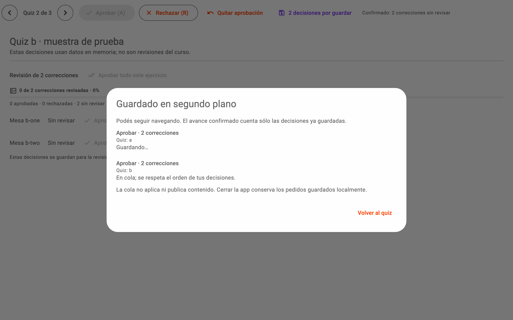

064UI reabiertaCorrecciones · 9 octubre 2026, 09:54 ART
Aprobás sin esperar y podés cambiar de opinión
Las decisiones se guardan en segundo plano, en orden; navegar sigue disponible.
Podés aprobar dos quizzes seguidos sin esperar el guardado. La UI ya está reabierta y permite rechazar después de aprobar o quitar la decisión, conservando tus revisiones anteriores.
La cola acompaña; no frena la revisión

Captura de prueba: dos aprobaciones simuladas, ninguna decisión sobre el curso real.
El avance cuenta únicamente decisiones confirmadas. Una respuesta tardía no te cambia de quiz ni pisa una decisión posterior.
La última decisión puede cambiar la anterior
Control
Qué hace
Mientras guarda
A · Aprobar
Aprueba las correcciones del quiz visible, incluso si estaban rechazadas.
Podés pasar al siguiente quiz.
R · Rechazar
Rechaza también lo que ya aprobaste.
Se guarda después del pedido anterior.
Quitar aprobación
Vuelve a sin revisar; también se puede deshacer un rechazo.
El resultado final respeta esa decisión.
Decisiones por guardar
Muestra pedidos pendientes, fallidos o recuperados al abrir.
Reintentar relee antes de repetir.
Los pedidos guardados localmente sobreviven al cierre. Al reabrir, los recuperados requieren Reanudar: no se ejecutan automáticamente.
Las pruebas pasan y tus revisiones se conservan
308 / 308
Pruebas ejecutadas; una integración real omitida explícitamente.
32 / 32
Pruebas focalizadas repetidas sobre el código instalado.
13 / 13
Registros humanos idénticos antes y después del reinicio.
Análisis estático limpio y compilación macOS correcta. Checkpoint idéntico; no se aprobaron, rechazaron ni publicaron propuestas reales durante las pruebas.
Seguís donde estabas revisando
1Negativas con beQuiz 6 de 20; antes y después visibles.
2Decidí y seguíFlechas para navegar; A/R para decidir.
3Mirá la colaSólo aparece cuando falta confirmar pedidos.
Cambiar una revisión no agrega ni quita propuestas de la corrida. Tampoco completa análisis pendientes ni publica contenido.